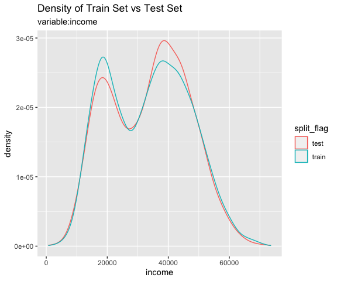
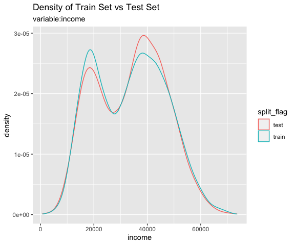

Overview
Binary classification modeling with alookr.
Features:
- Clean and split data sets to train and test.
- Create several representative models.
- Evaluate the performance of the model to select the best model.
- Support the entire process of developing a binary classification model.
The name alookr comes from looking at the analytics process in the data analysis process.
Install alookr
The released version is available on CRAN. but not yet.
install.packages("alookr")
Or you can get the development version without vignettes from GitHub:
devtools::install_github("choonghyunryu/alookr")
Or you can get the development version with vignettes from GitHub:
install.packages(c("ISLR", "spelling", "mlbench")) devtools::install_github("choonghyunryu/alookr", build_vignettes = TRUE)
Usage
alookr includes several vignette files, which we use throughout the documentation.
Provided vignettes is as follows.
- Cleansing the dataset
- Split the data into a train set and a test set
- Modeling and Evaluate, Predict
browseVignettes(package = "alookr")
Cleansing the dataset
Data: create example dataset
To illustrate basic use of the alookr package, create the data_exam with sample function. The data_exam dataset include 5 variables.
variables are as follows.:
-
id: character -
year: character -
count: numeric -
alpha: character -
flag: character
# create sample dataset set.seed(123L) id <- sapply(1:1000, function(x) paste(c(sample(letters, 5), x), collapse = "")) year <- "2018" set.seed(123L) count <- sample(1:10, size = 1000, replace = TRUE) set.seed(123L) alpha <- sample(letters, size = 1000, replace = TRUE) set.seed(123L) flag <- sample(c("Y", "N"), size = 1000, prob = c(0.1, 0.9), replace = TRUE) data_exam <- data.frame(id, year, count, alpha, flag, stringsAsFactors = FALSE) # structure of dataset str(data_exam) #> 'data.frame': 1000 obs. of 5 variables: #> $ id : chr "htjuw1" "bnvmk2" "ylqnc3" "xgbhu4" ... #> $ year : chr "2018" "2018" "2018" "2018" ... #> $ count: int 3 8 5 9 10 1 6 9 6 5 ... #> $ alpha: chr "h" "u" "k" "w" ... #> $ flag : chr "N" "N" "N" "N" ... # summary of dataset summary(data_exam) #> id year count alpha #> Length:1000 Length:1000 Min. : 1.000 Length:1000 #> Class :character Class :character 1st Qu.: 3.000 Class :character #> Mode :character Mode :character Median : 5.000 Mode :character #> Mean : 5.474 #> 3rd Qu.: 8.000 #> Max. :10.000 #> flag #> Length:1000 #> Class :character #> Mode :character #> #> #>
Clean dataset
cleanse() cleans up the dataset before fitting the classification model.
The function of cleanse() is as follows.:
- remove variables whose unique value is one
- remove variables with high unique rate
- converts character variables to factor
- remove variables with missing value
Cleanse dataset with cleanse()
For example, we can cleanse all variables in data_exam:
library(alookr) #> Loading required package: ggplot2 #> Loading required package: randomForest #> randomForest 4.6-14 #> Type rfNews() to see new features/changes/bug fixes. #> #> Attaching package: 'randomForest' #> The following object is masked from 'package:ggplot2': #> #> margin # cleansing dataset newDat <- cleanse(data_exam) #> ── Checking unique value ─────────────────────────── unique value is one ── #> remove variables that unique value is one #> ● year #> #> ── Checking unique rate ─────────────────────────────── high unique rate ── #> remove variables with high unique rate #> ● id = 1000(1) #> #> ── Checking character variables ─────────────────────── categorical data ── #> converts character variables to factor #> ● alpha #> ● flag # structure of cleansing dataset str(newDat) #> 'data.frame': 1000 obs. of 3 variables: #> $ count: int 3 8 5 9 10 1 6 9 6 5 ... #> $ alpha: Factor w/ 26 levels "a","b","c","d",..: 8 21 11 23 25 2 14 24 15 12 ... #> $ flag : Factor w/ 2 levels "N","Y": 1 1 1 1 2 1 1 1 1 1 ...
-
remove variables whose unique value is one: The year variable has only one value, “2018”. Not needed when fitting the model. So it was removed. -
remove variables with high unique rate: If the number of levels of categorical data is very large, it is not suitable for classification model. In this case, it is highly likely to be an identifier of the data. So, remove the categorical (or character) variable with a high value of the unique rate defined as “number of levels / number of observations”.- The unique rate of the id variable with the number of levels of 1000 is 1. This variable is the object of the removal by identifier.
- The unique rate of the alpha variable is 0.026 and this variable is also removed.
-
converts character variables to factor: The character type flag variable is converted to a factor type.
For example, we can not remove the categorical data that is removed by changing the threshold of the unique rate:
# cleansing dataset newDat <- cleanse(data_exam, uniq_thres = 0.03) #> ── Checking unique value ─────────────────────────── unique value is one ── #> remove variables that unique value is one #> ● year #> #> ── Checking unique rate ─────────────────────────────── high unique rate ── #> remove variables with high unique rate #> ● id = 1000(1) #> #> ── Checking character variables ─────────────────────── categorical data ── #> converts character variables to factor #> ● alpha #> ● flag # structure of cleansing dataset str(newDat) #> 'data.frame': 1000 obs. of 3 variables: #> $ count: int 3 8 5 9 10 1 6 9 6 5 ... #> $ alpha: Factor w/ 26 levels "a","b","c","d",..: 8 21 11 23 25 2 14 24 15 12 ... #> $ flag : Factor w/ 2 levels "N","Y": 1 1 1 1 2 1 1 1 1 1 ...
The alpha variable was not removed.
If you do not want to apply a unique rate, you can set the value of the uniq argument to FALSE.:
# cleansing dataset newDat <- cleanse(data_exam, uniq = FALSE) #> ── Checking character variables ─────────────────────── categorical data ── #> converts character variables to factor #> ● id #> ● year #> ● alpha #> ● flag # structure of cleansing dataset str(newDat) #> 'data.frame': 1000 obs. of 5 variables: #> $ id : Factor w/ 1000 levels "abety794","abkoe306",..: 301 59 929 890 904 694 997 465 134 124 ... #> $ year : Factor w/ 1 level "2018": 1 1 1 1 1 1 1 1 1 1 ... #> $ count: int 3 8 5 9 10 1 6 9 6 5 ... #> $ alpha: Factor w/ 26 levels "a","b","c","d",..: 8 21 11 23 25 2 14 24 15 12 ... #> $ flag : Factor w/ 2 levels "N","Y": 1 1 1 1 2 1 1 1 1 1 ...
If you do not want to force type conversion of a character variable to factor, you can set the value of the char argument to FALSE.:
# cleansing dataset newDat <- cleanse(data_exam, char = FALSE) #> ── Checking unique value ─────────────────────────── unique value is one ── #> remove variables that unique value is one #> ● year #> #> ── Checking unique rate ─────────────────────────────── high unique rate ── #> remove variables with high unique rate #> ● id = 1000(1) # structure of cleansing dataset str(newDat) #> 'data.frame': 1000 obs. of 3 variables: #> $ count: int 3 8 5 9 10 1 6 9 6 5 ... #> $ alpha: chr "h" "u" "k" "w" ... #> $ flag : chr "N" "N" "N" "N" ...
If you want to remove a variable that contains missing values, specify the value of the missing argument as TRUE. The following example removes the flag variable that contains the missing value.
data_exam$flag[1] <- NA # cleansing dataset newDat <- cleanse(data_exam, missing = TRUE) #> ── Checking missing value ────────────────────────────────── included NA ── #> remove variables whose included NA #> ● flag #> #> ── Checking unique value ─────────────────────────── unique value is one ── #> remove variables that unique value is one #> ● year #> #> ── Checking unique rate ─────────────────────────────── high unique rate ── #> remove variables with high unique rate #> ● id = 1000(1) #> #> ── Checking character variables ─────────────────────── categorical data ── #> converts character variables to factor #> ● alpha # structure of cleansing dataset str(newDat) #> 'data.frame': 1000 obs. of 2 variables: #> $ count: int 3 8 5 9 10 1 6 9 6 5 ... #> $ alpha: Factor w/ 26 levels "a","b","c","d",..: 8 21 11 23 25 2 14 24 15 12 ...
Split the data into a train set and a test set
Data: Credit Card Default Data
Default of ISLR package is a simulated data set containing information on ten thousand customers. The aim here is to predict which customers will default on their credit card debt.
A data frame with 10000 observations on the following 4 variables.:
-
default: factor. A factor with levels No and Yes indicating whether the customer defaulted on their debt -
student: factor. A factor with levels No and Yes indicating whether the customer is a student -
balance: numeric. The average balance that the customer has remaining on their credit card after making their monthly payment -
income: numeric. Income of customer
# Credit Card Default Data head(ISLR::Default) #> default student balance income #> 1 No No 729.5265 44361.625 #> 2 No Yes 817.1804 12106.135 #> 3 No No 1073.5492 31767.139 #> 4 No No 529.2506 35704.494 #> 5 No No 785.6559 38463.496 #> 6 No Yes 919.5885 7491.559 # structure of dataset str(ISLR::Default) #> 'data.frame': 10000 obs. of 4 variables: #> $ default: Factor w/ 2 levels "No","Yes": 1 1 1 1 1 1 1 1 1 1 ... #> $ student: Factor w/ 2 levels "No","Yes": 1 2 1 1 1 2 1 2 1 1 ... #> $ balance: num 730 817 1074 529 786 ... #> $ income : num 44362 12106 31767 35704 38463 ... # summary of dataset summary(ISLR::Default) #> default student balance income #> No :9667 No :7056 Min. : 0.0 Min. : 772 #> Yes: 333 Yes:2944 1st Qu.: 481.7 1st Qu.:21340 #> Median : 823.6 Median :34553 #> Mean : 835.4 Mean :33517 #> 3rd Qu.:1166.3 3rd Qu.:43808 #> Max. :2654.3 Max. :73554
Split dataset
split_by() splits the data.frame or tbl_df into a training set and a test set.
Split dataset with split_by()
The split_df class is created, which contains the split information and criteria to separate the training and the test set.
library(alookr) library(dplyr) # Generate data for the example sb <- ISLR::Default %>% split_by(default, seed = 6534) sb #> # A tibble: 10,000 x 5 #> # Groups: split_flag [2] #> default student balance income split_flag #> <fct> <fct> <dbl> <dbl> <chr> #> 1 No No 730. 44362. train #> 2 No Yes 817. 12106. train #> 3 No No 1074. 31767. train #> 4 No No 529. 35704. train #> 5 No No 786. 38463. test #> 6 No Yes 920. 7492. train #> 7 No No 826. 24905. test #> 8 No Yes 809. 17600. train #> 9 No No 1161. 37469. train #> 10 No No 0 29275. train #> # … with 9,990 more rows
The attributes of the split_df class are as follows.:
- split_seed : integer. random seed used for splitting
- target : character. the name of the target variable
- binary : logical. whether the target variable is binary class
- minority : character. the name of the minority class
- majority : character. the name of the majority class
- minority_rate : numeric. the rate of the minority class
- majority_rate : numeric. the rate of the majority class
attr_names <- names(attributes(sb)) attr_names #> [1] "names" "row.names" "groups" "class" #> [5] "split_seed" "target" "binary" "minority" #> [9] "majority" "minority_rate" "majority_rate" sb_attr <- attributes(sb) # The third property, row.names, is excluded from the output because its length is very long. sb_attr[!attr_names %in% "row.names"] #> $names #> [1] "default" "student" "balance" "income" "split_flag" #> #> $groups #> # A tibble: 2 x 2 #> split_flag .rows #> * <chr> <list<int>> #> 1 test [3,000] #> 2 train [7,000] #> #> $class #> [1] "split_df" "grouped_df" "tbl_df" "tbl" "data.frame" #> #> $split_seed #> [1] 6534 #> #> $target #> default #> "default" #> #> $binary #> [1] TRUE #> #> $minority #> [1] "Yes" #> #> $majority #> [1] "No" #> #> $minority_rate #> Yes #> 0.0333 #> #> $majority_rate #> No #> 0.9667
summary() summarizes the information of two datasets splitted by split_by().
summary(sb) #> ** Split train/test set information ** #> + random seed : 6534 #> + split data #> - train set count : 7000 #> - test set count : 3000 #> + target variable : default #> - minority class : Yes (0.033300) #> - majority class : No (0.966700)
Compare dataset
Train data and test data should be similar. If the two datasets are not similar, the performance of the predictive model may be reduced.
alookr provides a function to compare the similarity between train dataset and test dataset.
If the two data sets are not similar, the train dataset and test dataset should be splitted again from the original data.
Comparison of categorical variables with compare_target_category()
Compare the statistics of the categorical variables of the train set and test set included in the “split_df” class.
sb %>% compare_target_category() #> # A tibble: 4 x 5 #> variable level train test abs_diff #> <chr> <fct> <dbl> <dbl> <dbl> #> 1 default No 96.7 96.7 0.00476 #> 2 default Yes 3.33 3.33 0.00476 #> 3 student No 70.0 71.8 1.77 #> 4 student Yes 30.0 28.2 1.77 # compare variables that are character data types. sb %>% compare_target_category(add_character = TRUE) #> # A tibble: 4 x 5 #> variable level train test abs_diff #> <chr> <fct> <dbl> <dbl> <dbl> #> 1 default No 96.7 96.7 0.00476 #> 2 default Yes 3.33 3.33 0.00476 #> 3 student No 70.0 71.8 1.77 #> 4 student Yes 30.0 28.2 1.77 # display marginal sb %>% compare_target_category(margin = TRUE) #> # A tibble: 6 x 5 #> variable level train test abs_diff #> <chr> <fct> <dbl> <dbl> <dbl> #> 1 default No 96.7 96.7 0.00476 #> 2 default Yes 3.33 3.33 0.00476 #> 3 default <Total> 100 100 0.00952 #> 4 student No 70.0 71.8 1.77 #> 5 student Yes 30.0 28.2 1.77 #> 6 student <Total> 100 100 3.54 # student variable only sb %>% compare_target_category(student) #> # A tibble: 2 x 5 #> variable level train test abs_diff #> <chr> <fct> <dbl> <dbl> <dbl> #> 1 student No 70.0 71.8 1.77 #> 2 student Yes 30.0 28.2 1.77 sb %>% compare_target_category(student, margin = TRUE) #> # A tibble: 3 x 5 #> variable level train test abs_diff #> <chr> <fct> <dbl> <dbl> <dbl> #> 1 student No 70.0 71.8 1.77 #> 2 student Yes 30.0 28.2 1.77 #> 3 student <Total> 100 100 3.54
compare_target_category() returns tbl_df, where the variables have the following.:
- variable : character. categorical variable name
- level : factor. level of categorical variables
- train : numeric. the relative frequency of the level in the train set
- test : numeric. the relative frequency of the level in the test set
- abs_diff : numeric. the absolute value of the difference between two relative frequencies
Comparison of numeric variables with compare_target_numeric()
Compare the statistics of the numerical variables of the train set and test set included in the “split_df” class.
sb %>% compare_target_numeric() #> # A tibble: 2 x 7 #> variable train_mean test_mean train_sd test_sd train_z test_z #> <chr> <dbl> <dbl> <dbl> <dbl> <dbl> <dbl> #> 1 balance 836. 834. 487. 477. 1.72 1.75 #> 2 income 33446. 33684. 13437. 13101. 2.49 2.57 # balance variable only sb %>% compare_target_numeric(balance) #> # A tibble: 1 x 7 #> variable train_mean test_mean train_sd test_sd train_z test_z #> <chr> <dbl> <dbl> <dbl> <dbl> <dbl> <dbl> #> 1 balance 836. 834. 487. 477. 1.72 1.75
compare_target_numeric() returns tbl_df, where the variables have the following.:
- variable : character. numeric variable name
- train_mean : numeric. arithmetic mean of train set
- test_mean : numeric. arithmetic mean of test set
- train_sd : numeric. standard deviation of train set
- test_sd : numeric. standard deviation of test set
- train_z : numeric. the arithmetic mean of the train set divided by the standard deviation
- test_z : numeric. the arithmetic mean of the test set divided by the standard deviation
Comparison plot with compare_plot()
Plot compare information of the train set and test set included in the “split_df” class.
# income variable only sb %>% compare_plot("income")

# all varibales sb %>% compare_plot()

 

Diagnosis of train set and test set with compare_diag()
Diagnosis of similarity between datasets splitted by train set and set included in the “split_df” class.
defaults <- ISLR::Default defaults$id <- seq(NROW(defaults)) set.seed(1) defaults[sample(seq(NROW(defaults)), 3), "student"] <- NA set.seed(2) defaults[sample(seq(NROW(defaults)), 10), "balance"] <- NA sb_2 <- defaults %>% split_by(default) sb_2 %>% compare_diag() #> * Detected diagnose missing value #> - student #> - balance #> #> * Detected diagnose missing levels #> - student #> $missing_value #> # A tibble: 2 x 4 #> variables train_misscount train_missrate test_missrate #> <chr> <int> <dbl> <dbl> #> 1 student 3 0.0429 NA #> 2 balance 5 0.0714 0.167 #> #> $single_value #> # A tibble: 0 x 3 #> # … with 3 variables: variables <chr>, train_uniq <lgl>, test_uniq <lgl> #> #> $uniq_rate #> # A tibble: 0 x 5 #> # … with 5 variables: variables <chr>, train_uniqcount <int>, #> # train_uniqrate <dbl>, test_uniqcount <int>, test_uniqrate <dbl> #> #> $missing_level #> # A tibble: 1 x 4 #> variables n_levels train_missing_nlevel test_missing_nlevel #> <chr> <int> <int> <int> #> 1 student 3 0 1 sb_2 %>% compare_diag(add_character = TRUE) #> * Detected diagnose missing value #> - student #> - balance #> #> * Detected diagnose missing levels #> - student #> $missing_value #> # A tibble: 2 x 4 #> variables train_misscount train_missrate test_missrate #> <chr> <int> <dbl> <dbl> #> 1 student 3 0.0429 NA #> 2 balance 5 0.0714 0.167 #> #> $single_value #> # A tibble: 0 x 3 #> # … with 3 variables: variables <chr>, train_uniq <lgl>, test_uniq <lgl> #> #> $uniq_rate #> # A tibble: 0 x 5 #> # … with 5 variables: variables <chr>, train_uniqcount <int>, #> # train_uniqrate <dbl>, test_uniqcount <int>, test_uniqrate <dbl> #> #> $missing_level #> # A tibble: 1 x 4 #> variables n_levels train_missing_nlevel test_missing_nlevel #> <chr> <int> <int> <int> #> 1 student 3 0 1 sb_2 %>% compare_diag(uniq_thres = 0.0005) #> * Detected diagnose missing value #> - student #> - balance #> #> * Detected diagnose many unique value #> - default #> - student #> #> * Detected diagnose missing levels #> - student #> $missing_value #> # A tibble: 2 x 4 #> variables train_misscount train_missrate test_missrate #> <chr> <int> <dbl> <dbl> #> 1 student 3 0.0429 NA #> 2 balance 5 0.0714 0.167 #> #> $single_value #> # A tibble: 0 x 3 #> # … with 3 variables: variables <chr>, train_uniq <lgl>, test_uniq <lgl> #> #> $uniq_rate #> # A tibble: 2 x 5 #> variables train_uniqcount train_uniqrate test_uniqcount test_uniqrate #> <chr> <int> <dbl> <int> <dbl> #> 1 default NA NA 2 0.000667 #> 2 student NA NA 2 0.000667 #> #> $missing_level #> # A tibble: 1 x 4 #> variables n_levels train_missing_nlevel test_missing_nlevel #> <chr> <int> <int> <int> #> 1 student 3 0 1
Extract train/test dataset
If you compare the train set with the test set and find that the two datasets are similar, extract the data from the split_df object.
Extract train set or test set with extract_set()
Extract train set or test set from split_df class object.
train <- sb %>% extract_set(set = "train") test <- sb %>% extract_set(set = "test") dim(train) #> [1] 7000 4 dim(test) #> [1] 3000 4
Extract the data to fit the model with sampling_target()
In a target class, the ratio of the majority class to the minority class is not similar and the ratio of the minority class is very small, which is called the imbalanced class.
If target variable is an imbalanced class, the characteristics of the majority class are actively reflected in the model. This model implies an error in predicting the minority class as the majority class. So we have to make the train dataset a balanced class.
sampling_target() performs sampling on the train set of split_df to resolve the imbalanced class.
# under-sampling with random seed under <- sb %>% sampling_target(seed = 1234L) under %>% count(default) #> # A tibble: 2 x 2 #> default n #> <fct> <int> #> 1 No 233 #> 2 Yes 233 # under-sampling with random seed, and minority class frequency is 40% under40 <- sb %>% sampling_target(seed = 1234L, perc = 40) under40 %>% count(default) #> # A tibble: 2 x 2 #> default n #> <fct> <int> #> 1 No 349 #> 2 Yes 233 # over-sampling with random seed over <- sb %>% sampling_target(method = "ubOver", seed = 1234L) #> Warning: `as.tbl()` is deprecated as of dplyr 1.0.0. #> Please use `tibble::as_tibble()` instead. #> This warning is displayed once every 8 hours. #> Call `lifecycle::last_warnings()` to see where this warning was generated. over %>% count(default) #> # A tibble: 2 x 2 #> default n #> <fct> <int> #> 1 No 6767 #> 2 Yes 6767 # over-sampling with random seed, and k = 10 over10 <- sb %>% sampling_target(method = "ubOver", seed = 1234L, k = 10) over10 %>% count(default) #> # A tibble: 2 x 2 #> default n #> <fct> <int> #> 1 No 6767 #> 2 Yes 2330 # SMOTE with random seed smote <- sb %>% sampling_target(method = "ubSMOTE", seed = 1234L) smote %>% count(default) #> # A tibble: 2 x 2 #> default n #> <fct> <int> #> 1 No 932 #> 2 Yes 699 # SMOTE with random seed, and perc.under = 250 smote250 <- sb %>% sampling_target(method = "ubSMOTE", seed = 1234L, perc.under = 250) smote250 %>% count(default) #> # A tibble: 2 x 2 #> default n #> <fct> <int> #> 1 No 1165 #> 2 Yes 699
The argument that specifies the sampling method in sampling_target () is method. “ubUnder” is under-sampling, and “ubOver” is over-sampling, “ubSMOTE” is SMOTE(Synthetic Minority Over-sampling TEchnique).
Modeling and Evaluate, Predict
Data: Wisconsin Breast Cancer Data
BreastCancer of mlbench package is a breast cancer data. The objective is to identify each of a number of benign or malignant classes.
A data frame with 699 observations on 11 variables, one being a character variable, 9 being ordered or nominal, and 1 target class.:
-
Id: character. Sample code number -
Cl.thickness: ordered factor. Clump Thickness -
Cell.size: ordered factor. Uniformity of Cell Size -
Cell.shape: ordered factor. Uniformity of Cell Shape -
Marg.adhesion: ordered factor. Marginal Adhesion -
Epith.c.size: ordered factor. Single Epithelial Cell Size -
Bare.nuclei: factor. Bare Nuclei -
Bl.cromatin: factor. Bland Chromatin -
Normal.nucleoli: factor. Normal Nucleoli -
Mitoses: factor. Mitoses -
Class: factor. Class. level isbenignandmalignant.
library(mlbench) data(BreastCancer) # class of each variables sapply(BreastCancer, function(x) class(x)[1]) #> Id Cl.thickness Cell.size Cell.shape Marg.adhesion #> "character" "ordered" "ordered" "ordered" "ordered" #> Epith.c.size Bare.nuclei Bl.cromatin Normal.nucleoli Mitoses #> "ordered" "factor" "factor" "factor" "factor" #> Class #> "factor"
Preperation the data
Perform data preprocessing as follows.:
- Find and imputate variables that contain missing values.
- Split the data into a train set and a test set.
- To solve the imbalanced class, perform sampling in the train set of raw data.
- Cleansing the dataset for classification modeling.
Fix the missing value with dlookr::imputate_na()
find the variables that include missing value. and imputate the missing value using imputate_na() in dlookr package.
library(dlookr) library(dplyr) # variable that have a missing value diagnose(BreastCancer) %>% filter(missing_count > 0) #> # A tibble: 1 x 6 #> variables types missing_count missing_percent unique_count unique_rate #> <chr> <chr> <int> <dbl> <int> <dbl> #> 1 Bare.nuclei factor 16 2.29 11 0.0157 # imputation of missing value breastCancer <- BreastCancer %>% mutate(Bare.nuclei = imputate_na(BreastCancer, Bare.nuclei, Class, method = "mice", no_attrs = TRUE, print_flag = FALSE))
Split data set
Splits the dataset into a train set and a test set with split_by()
split_by() in the alookr package splits the dataset into a train set and a test set.
The ratio argument of the split_by() function specifies the ratio of the train set.
split_by() creates a class object named split_df.
library(alookr) # split the data into a train set and a test set by default arguments sb <- breastCancer %>% split_by(target = Class) # show the class name class(sb) #> [1] "split_df" "grouped_df" "tbl_df" "tbl" "data.frame" # split the data into a train set and a test set by ratio = 0.6 tmp <- breastCancer %>% split_by(Class, ratio = 0.6)
The summary() function displays the following useful information about the split_df object:
- random seed : The random seed is the random seed used internally to separate the data
- split data : Information of splited data
- train set count : number of train set
- test set count : number of test set
- target variable : Target variable name
- minority class : name and ratio(In parentheses) of minority class
- majority class : name and ratio(In parentheses) of majority class
# summary() display the some information summary(sb) #> ** Split train/test set information ** #> + random seed : 50785 #> + split data #> - train set count : 489 #> - test set count : 210 #> + target variable : Class #> - minority class : malignant (0.344778) #> - majority class : benign (0.655222) # summary() display the some information summary(tmp) #> ** Split train/test set information ** #> + random seed : 60620 #> + split data #> - train set count : 419 #> - test set count : 280 #> + target variable : Class #> - minority class : malignant (0.344778) #> - majority class : benign (0.655222)
Check missing levels in the train set
In the case of categorical variables, when a train set and a test set are separated, a specific level may be missing from the train set.
In this case, there is no problem when fitting the model, but an error occurs when predicting with the model you created. Therefore, preprocessing is performed to avoid missing data preprocessing.
In the following example, fortunately, there is no categorical variable that contains the missing levels in the train set.
# list of categorical variables in the train set that contain missing levels nolevel_in_train <- sb %>% compare_target_category() %>% filter(train == 0) %>% select(variable) %>% unique() %>% pull nolevel_in_train #> character(0) # if any of the categorical variables in the train set contain a missing level, # split them again. while (length(nolevel_in_train) > 0) { sb <- breastCancer %>% split_by(Class) nolevel_in_train <- sb %>% compare_target_category() %>% filter(train == 0) %>% select(variable) %>% unique() %>% pull }
Handling the imbalanced classes data with sampling_target()
Issue of imbalanced classes data
Imbalanced classes(levels) data means that the number of one level of the frequency of the target variable is relatively small. In general, the proportion of positive classes is relatively small. For example, in the model of predicting spam, the class of interest spam is less than non-spam.
Imbalanced classes data is a common problem in machine learning classification.
table() and prop.table() are traditionally useful functions for diagnosing imbalanced classes data. However, alookr’s summary() is simpler and provides more information.
# train set frequency table - imbalanced classes data table(sb$Class) #> #> benign malignant #> 458 241 # train set relative frequency table - imbalanced classes data prop.table(table(sb$Class)) #> #> benign malignant #> 0.6552217 0.3447783 # using summary function - imbalanced classes data summary(sb) #> ** Split train/test set information ** #> + random seed : 50785 #> + split data #> - train set count : 489 #> - test set count : 210 #> + target variable : Class #> - minority class : malignant (0.344778) #> - majority class : benign (0.655222)
Handling the imbalanced classes data
Most machine learning algorithms work best when the number of samples in each class are about equal. And most algorithms are designed to maximize accuracy and reduce error. So, we requre handling an imbalanced class problem.
sampling_target() performs sampling to solve an imbalanced classes data problem.
Resampling - oversample minority class
Oversampling can be defined as adding more copies of the minority class.
Oversampling is performed by specifying “ubOver” in the method argument of the sampling_target() function.
# to balanced by over sampling train_over <- sb %>% sampling_target(method = "ubOver") # frequency table table(train_over$Class) #> #> benign malignant #> 330 330
Resampling - undersample majority class
Undersampling can be defined as removing some observations of the majority class.
Undersampling is performed by specifying “ubUnder” in the method argument of the sampling_target() function.
# to balanced by under sampling train_under <- sb %>% sampling_target(method = "ubUnder") # frequency table table(train_under$Class) #> #> benign malignant #> 159 159
Generate synthetic samples - SMOTE
SMOTE(Synthetic Minority Oversampling Technique) uses a nearest neighbors algorithm to generate new and synthetic data.
SMOTE is performed by specifying “ubSMOTE” in the method argument of the sampling_target() function.
# to balanced by SMOTE train_smote <- sb %>% sampling_target(seed = 1234L, method = "ubSMOTE") # frequency table table(train_smote$Class) #> #> benign malignant #> 636 477
Cleansing the dataset for classification modeling with cleanse()
The cleanse() cleanse the dataset for classification modeling.
This function is useful when fit the classification model. This function does the following.:
- Remove the variable with only one value.
- And remove variables that have a unique number of values relative to the number of observations for a character or categorical variable.
- In this case, it is a variable that corresponds to an identifier or an identifier.
- And converts the character to factor.
In this example, The cleanse() function removed a variable ID with a high unique rate.
# clean the training set train <- train_smote %>% cleanse #> ── Checking unique value ─────────────────────────── unique value is one ── #> No variables that unique value is one. #> #> ── Checking unique rate ─────────────────────────────── high unique rate ── #> remove variables with high unique rate #> ● Id = 416(0.373764600179695) #> #> ── Checking character variables ─────────────────────── categorical data ── #> No character variables.
Extract test set for evaluation of the model with extract_set()
# extract test set test <- sb %>% extract_set(set = "test")
Binary classification modeling with run_models()
run_models() performs some representative binary classification modeling using split_df object created by split_by().
run_models() executes the process in parallel when fitting the model. However, it is not supported in MS-Windows operating system and RStudio environment.
Currently supported algorithms are as follows.:
- logistic : logistic regression using
statspackage - rpart : Recursive Partitioning Trees using
rpartpackage - ctree : Conditional Inference Trees using
partypackage - randomForest :Classification with Random Forest using
randomForestpackage - ranger : A Fast Implementation of Random Forests using
rangerpackage
run_models() returns a model_df class object.
The model_df class object contains the following variables.:
- step : character. The current stage in the classification modeling process.
- For objects created with
run_models(), the value of the variable is “1.Fitted”.
- For objects created with
- model_id : model identifiers
- target : name of target variable
- positive : positive class in target variable
- fitted_model : list. Fitted model object by model_id’s algorithms
result <- train %>% run_models(target = "Class", positive = "malignant") result #> # A tibble: 5 x 5 #> step model_id target positive fitted_model #> <chr> <chr> <chr> <chr> <list> #> 1 1.Fitted logistic Class malignant <glm> #> 2 1.Fitted rpart Class malignant <rpart> #> 3 1.Fitted ctree Class malignant <BinaryTr> #> 4 1.Fitted randomForest Class malignant <rndmFrs.> #> 5 1.Fitted ranger Class malignant <ranger>
Evaluate the model
Evaluate the predictive performance of fitted models.
Predict test set using fitted model with run_predict()
run_predict() predict the test set using model_df class fitted by run_models().
run_predict () is executed in parallel when predicting by model. However, it is not supported in MS-Windows operating system and RStudio environment.
The model_df class object contains the following variables.:
- step : character. The current stage in the classification modeling process.
- For objects created with
run_predict(), the value of the variable is “2.Predicted”.
- For objects created with
- model_id : character. Type of fit model.
- target : character. Name of target variable.
- positive : character. Level of positive class of binary classification.
- fitted_model : list. Fitted model object by model_id’s algorithms.
- predicted : result of predcit by each models
pred <- result %>% run_predict(test) pred #> # A tibble: 5 x 6 #> step model_id target positive fitted_model predicted #> <chr> <chr> <chr> <chr> <list> <list> #> 1 2.Predicted logistic Class malignant <glm> <fct [210]> #> 2 2.Predicted rpart Class malignant <rpart> <fct [210]> #> 3 2.Predicted ctree Class malignant <BinaryTr> <fct [210]> #> 4 2.Predicted randomForest Class malignant <rndmFrs.> <fct [210]> #> 5 2.Predicted ranger Class malignant <ranger> <fct [210]>
Calculate the performance metric with run_performance()
run_performance() calculate the performance metric of model_df class predicted by run_predict().
run_performance () is performed in parallel when calculating the performance evaluation index. However, it is not supported in MS-Windows operating system and RStudio environment.
The model_df class object contains the following variables.:
- step : character. The current stage in the classification modeling process.
- For objects created with
run_performance(), the value of the variable is “3.Performanced”.
- For objects created with
- model_id : character. Type of fit model.
- target : character. Name of target variable.
- positive : character. Level of positive class of binary classification.
- fitted_model : list. Fitted model object by model_id’s algorithms
- predicted : list. Predicted value by individual model. Each value has a predict_class class object.
- performance : list. Calculate metrics by individual model. Each value has a numeric vector.
# Calculate performace metrics. perf <- run_performance(pred) perf #> # A tibble: 5 x 7 #> step model_id target positive fitted_model predicted performance #> <chr> <chr> <chr> <chr> <list> <list> <list> #> 1 3.Performanc… logistic Class maligna… <glm> <fct [210… <dbl [15]> #> 2 3.Performanc… rpart Class maligna… <rpart> <fct [210… <dbl [15]> #> 3 3.Performanc… ctree Class maligna… <BinaryTr> <fct [210… <dbl [15]> #> 4 3.Performanc… randomForest Class maligna… <rndmFrs.> <fct [210… <dbl [15]> #> 5 3.Performanc… ranger Class maligna… <ranger> <fct [210… <dbl [15]>
The performance variable contains a list object, which contains 15 performance metrics:
- ZeroOneLoss : Normalized Zero-One Loss(Classification Error Loss).
- Accuracy : Accuracy.
- Precision : Precision.
- Recall : Recall.
- Sensitivity : Sensitivity.
- Specificity : Specificity.
- F1_Score : F1 Score.
- Fbeta_Score : F-Beta Score.
- LogLoss : Log loss / Cross-Entropy Loss.
- AUC : Area Under the Receiver Operating Characteristic Curve (ROC AUC).
- Gini : Gini Coefficient.
- PRAUC : Area Under the Precision-Recall Curve (PR AUC).
- LiftAUC : Area Under the Lift Chart.
- GainAUC : Area Under the Gain Chart.
- KS_Stat : Kolmogorov-Smirnov Statistic.
# Performance by analytics models performance <- perf$performance names(performance) <- perf$model_id performance #> $logistic #> ZeroOneLoss Accuracy Precision Recall Sensitivity Specificity #> 0.04761905 0.95238095 0.95000000 0.92682927 0.92682927 0.96875000 #> F1_Score Fbeta_Score LogLoss AUC Gini PRAUC #> 0.93827160 0.93827160 1.51027400 0.95126715 0.94702744 0.06077086 #> LiftAUC GainAUC KS_Stat #> 1.08596033 0.77505807 90.33917683 #> #> $rpart #> ZeroOneLoss Accuracy Precision Recall Sensitivity Specificity #> 0.06190476 0.93809524 0.93670886 0.90243902 0.90243902 0.96093750 #> F1_Score Fbeta_Score LogLoss AUC Gini PRAUC #> 0.91925466 0.91925466 0.41591455 0.92721037 0.89176829 0.80545712 #> LiftAUC GainAUC KS_Stat #> 1.82146153 0.76039489 86.33765244 #> #> $ctree #> ZeroOneLoss Accuracy Precision Recall Sensitivity Specificity #> 0.04761905 0.95238095 0.92857143 0.95121951 0.95121951 0.95312500 #> F1_Score Fbeta_Score LogLoss AUC Gini PRAUC #> 0.93975904 0.93975904 0.61176450 0.97170351 0.95865091 0.47903471 #> LiftAUC GainAUC KS_Stat #> 1.49393413 0.78751452 90.43445122 #> #> $randomForest #> ZeroOneLoss Accuracy Precision Recall Sensitivity Specificity #> 0.02857143 0.97142857 0.95238095 0.97560976 0.97560976 0.96875000 #> F1_Score Fbeta_Score LogLoss AUC Gini PRAUC #> 0.96385542 0.96385542 0.09943100 0.99328316 0.98647104 0.68540128 #> LiftAUC GainAUC KS_Stat #> 1.65902776 0.80066783 95.99847561 #> #> $ranger #> ZeroOneLoss Accuracy Precision Recall Sensitivity Specificity #> 0.02380952 0.97619048 0.97530864 0.96341463 0.96341463 0.98437500 #> F1_Score Fbeta_Score LogLoss AUC Gini PRAUC #> 0.96932515 0.96932515 0.09782736 0.99323552 0.98647104 0.76957551 #> LiftAUC GainAUC KS_Stat #> 1.74052776 0.80063879 96.43673780
If you change the list object to tidy format, you’ll see the following at a glance:
# Convert to matrix for compare performace. sapply(performance, "c") #> logistic rpart ctree randomForest ranger #> ZeroOneLoss 0.04761905 0.06190476 0.04761905 0.02857143 0.02380952 #> Accuracy 0.95238095 0.93809524 0.95238095 0.97142857 0.97619048 #> Precision 0.95000000 0.93670886 0.92857143 0.95238095 0.97530864 #> Recall 0.92682927 0.90243902 0.95121951 0.97560976 0.96341463 #> Sensitivity 0.92682927 0.90243902 0.95121951 0.97560976 0.96341463 #> Specificity 0.96875000 0.96093750 0.95312500 0.96875000 0.98437500 #> F1_Score 0.93827160 0.91925466 0.93975904 0.96385542 0.96932515 #> Fbeta_Score 0.93827160 0.91925466 0.93975904 0.96385542 0.96932515 #> LogLoss 1.51027400 0.41591455 0.61176450 0.09943100 0.09782736 #> AUC 0.95126715 0.92721037 0.97170351 0.99328316 0.99323552 #> Gini 0.94702744 0.89176829 0.95865091 0.98647104 0.98647104 #> PRAUC 0.06077086 0.80545712 0.47903471 0.68540128 0.76957551 #> LiftAUC 1.08596033 1.82146153 1.49393413 1.65902776 1.74052776 #> GainAUC 0.77505807 0.76039489 0.78751452 0.80066783 0.80063879 #> KS_Stat 90.33917683 86.33765244 90.43445122 95.99847561 96.43673780
compare_performance() return a list object(results of compared model performance). and list has the following components:
- recommend_model : character. The name of the model that is recommended as the best among the various models.
- top_count : numeric. The number of best performing performance metrics by model.
- mean_rank : numeric. Average of ranking individual performance metrics by model.
- top_metric : list. The name of the performance metric with the best performance on individual performance metrics by model.
In this example, compare_performance() recommend the “ranger” model.
# Compaire the Performance metrics of each model comp_perf <- compare_performance(pred) comp_perf #> $recommend_model #> [1] "ranger" #> #> $top_metric_count #> logistic rpart ctree randomForest ranger #> 0 2 0 4 8 #> #> $mean_rank #> logistic rpart ctree randomForest ranger #> 3.961538 4.076923 3.615385 1.923077 1.423077 #> #> $top_metric #> $top_metric$logistic #> NULL #> #> $top_metric$rpart #> [1] "PRAUC" "LiftAUC" #> #> $top_metric$ctree #> NULL #> #> $top_metric$randomForest #> [1] "Recall" "AUC" "Gini" "GainAUC" #> #> $top_metric$ranger #> [1] "ZeroOneLoss" "Accuracy" "Precision" "Specificity" "F1_Score" #> [6] "LogLoss" "Gini" "KS_Stat"
Plot the ROC curve with plot_performance()
compare_performance() plot ROC curve.
# Plot ROC curve plot_performance(pred)

Tunning the cut-off
In general, if the prediction probability is greater than 0.5 in the binary classification model, it is predicted as positive class. In other words, 0.5 is used for the cut-off value. This applies to most model algorithms. However, in some cases, the performance can be tuned by changing the cut-off value.
plot_cutoff () visualizes a plot to select the cut-off value, and returns the cut-off value.
pred_best <- pred %>% filter(model_id == comp_perf$recommend_model) %>% select(predicted) %>% pull %>% .[[1]] %>% attr("pred_prob") cutoff <- plot_cutoff(pred_best, test$Class, "malignant", type = "mcc")

cutoff #> [1] 0.4 cutoff2 <- plot_cutoff(pred_best, test$Class, "malignant", type = "density")

cutoff2 #> [1] 0.9139 cutoff3 <- plot_cutoff(pred_best, test$Class, "malignant", type = "prob")

cutoff3 #> [1] 0.4
Performance comparison between prediction and tuned cut-off with performance_metric()
Compare the performance of the original prediction with that of the tuned cut-off. Compare the cut-off with the non-cut model for the model with the best performance comp_perf$recommend_model.
comp_perf$recommend_model #> [1] "ranger" # extract predicted probability idx <- which(pred$model_id == comp_perf$recommend_model) pred_prob <- attr(pred$predicted[[idx]], "pred_prob") # or, extract predicted probability using dplyr pred_prob <- pred %>% filter(model_id == comp_perf$recommend_model) %>% select(predicted) %>% pull %>% "[["(1) %>% attr("pred_prob") # predicted probability pred_prob #> [1] 0.0000000000 0.0000000000 0.0000000000 0.0000000000 0.0205833333 #> [6] 0.0000000000 0.0000000000 0.0000000000 0.0000000000 0.0000000000 #> [11] 0.6707753968 0.0006944444 0.6684047619 0.9756777778 0.9949785714 #> [16] 0.9990000000 0.6925880952 0.9037761905 0.5328198413 0.9166833333 #> [21] 0.0331595238 0.0147444444 0.0000000000 0.0521071429 0.9940896825 #> [26] 0.0000000000 0.0000000000 0.0000000000 0.0000000000 1.0000000000 #> [31] 0.7108809524 0.6118476190 0.8382333333 0.9996666667 0.9298571429 #> [36] 1.0000000000 0.1262626984 0.0012190476 0.0027746032 0.8097222222 #> [41] 0.1313126984 0.8987753968 0.0000000000 0.0000000000 0.1115285714 #> [46] 0.9373230159 1.0000000000 0.0000000000 1.0000000000 0.0000000000 #> [51] 0.0479595238 0.0000000000 0.0000000000 0.0000000000 1.0000000000 #> [56] 0.9977166667 0.9947666667 0.0000000000 0.0000000000 0.0000000000 #> [61] 0.9998000000 0.0000000000 0.9502523810 0.9975920635 1.0000000000 #> [66] 0.9984444444 0.0000000000 0.0000000000 0.9685920635 0.0000000000 #> [71] 1.0000000000 1.0000000000 0.9997500000 0.9995000000 0.0000000000 #> [76] 0.9929277778 0.0160777778 0.0122246032 0.9988000000 1.0000000000 #> [81] 0.9987000000 0.9988277778 0.9918174603 0.2190603175 0.0043333333 #> [86] 0.0000000000 0.9037761905 0.0000000000 1.0000000000 0.9980952381 #> [91] 0.0000000000 0.9927277778 0.0000000000 0.0008666667 0.0000000000 #> [96] 0.0000000000 0.9517920635 0.0000000000 0.2981222222 0.8820182540 #> [101] 0.0000000000 0.9956428571 0.5261833333 0.9724634921 0.9946500000 #> [106] 0.0000000000 0.9869634921 0.0000000000 0.0000000000 0.0000000000 #> [111] 0.1347230159 0.0296865079 0.4730571429 0.0000000000 0.9128222222 #> [116] 0.5965928571 1.0000000000 0.9929666667 0.9420142857 1.0000000000 #> [121] 0.0000000000 0.0000000000 0.1508253968 0.0000000000 0.0000000000 #> [126] 0.9923833333 0.0000000000 0.0175500000 0.0030222222 0.0000000000 #> [131] 0.0000000000 0.9995000000 0.0198722222 0.0138111111 1.0000000000 #> [136] 0.0052142857 0.9744706349 0.9822666667 0.0095904762 0.0000000000 #> [141] 0.9216746032 0.1468793651 0.0000000000 0.4026603175 0.9991000000 #> [146] 0.9995000000 1.0000000000 0.0000000000 0.9941190476 1.0000000000 #> [151] 0.0000000000 0.9972500000 0.0000000000 0.0000000000 0.0000000000 #> [156] 0.0000000000 0.0000000000 0.0000000000 0.0000000000 0.0000000000 #> [161] 0.0000000000 0.0000000000 0.0000000000 0.0000000000 0.0000000000 #> [166] 0.0000000000 0.0000000000 0.0532007937 0.4910793651 0.0000000000 #> [171] 0.0057079365 1.0000000000 0.0000000000 0.0000000000 0.0218484127 #> [176] 1.0000000000 0.0000000000 0.9945523810 0.0117444444 0.0113055556 #> [181] 0.0000000000 0.0000000000 0.7085634921 0.9912404762 0.9178690476 #> [186] 0.0000000000 0.0000000000 0.0000000000 0.0000000000 0.0000000000 #> [191] 0.0000000000 0.0000000000 0.0000000000 0.9638690476 0.0000000000 #> [196] 0.0000000000 0.0000000000 0.0000000000 0.0032944444 0.9911285714 #> [201] 0.0000000000 0.0000000000 0.0000000000 1.0000000000 0.0000000000 #> [206] 0.0303150794 0.0000000000 0.0017968254 0.9897047619 0.9862357143 # compaire Accuracy performance_metric(pred_prob, test$Class, "malignant", "Accuracy") #> [1] 0.9761905 performance_metric(pred_prob, test$Class, "malignant", "Accuracy", cutoff = cutoff) #> [1] 0.9809524 # compaire Confusion Matrix performance_metric(pred_prob, test$Class, "malignant", "ConfusionMatrix") #> actual #> predict benign malignant #> benign 126 3 #> malignant 2 79 performance_metric(pred_prob, test$Class, "malignant", "ConfusionMatrix", cutoff = cutoff) #> actual #> predict benign malignant #> benign 125 1 #> malignant 3 81 # compaire F1 Score performance_metric(pred_prob, test$Class, "malignant", "F1_Score") #> [1] 0.9693252 performance_metric(pred_prob, test$Class, "malignant", "F1_Score", cutoff = cutoff) #> [1] 0.9759036 performance_metric(pred_prob, test$Class, "malignant", "F1_Score", cutoff = cutoff2) #> [1] 0.8707483
If the performance of the tuned cut-off is good, use it as a cut-off to predict positives.
Predict
If you have selected a good model from several models, then perform the prediction with that model.
Create data set for predict
Create sample data for predicting by extracting 100 samples from the data set used in the previous under sampling example.
data_pred <- train_under %>% cleanse #> ── Checking unique value ─────────────────────────── unique value is one ── #> No variables that unique value is one. #> #> ── Checking unique rate ─────────────────────────────── high unique rate ── #> remove variables with high unique rate #> ● Id = 306(0.962264150943396) #> #> ── Checking character variables ─────────────────────── categorical data ── #> No character variables. set.seed(1234L) data_pred <- data_pred %>% nrow %>% seq %>% sample(size = 50) %>% data_pred[., ]
Predict with alookr and dplyr
Do a predict using the dplyr package. The last factor() function eliminates unnecessary information.
pred_actual <- pred %>% filter(model_id == comp_perf$recommend_model) %>% run_predict(data_pred) %>% select(predicted) %>% pull %>% "[["(1) %>% factor() pred_actual #> [1] malignant malignant benign benign benign malignant malignant #> [8] benign malignant malignant benign malignant malignant benign #> [15] malignant benign malignant malignant malignant benign malignant #> [22] benign benign malignant malignant malignant malignant malignant #> [29] malignant malignant benign benign malignant malignant benign #> [36] benign benign malignant malignant benign benign malignant #> [43] benign benign benign malignant benign benign malignant #> [50] benign #> Levels: benign malignant
If you want to predict by cut-off, specify the cutoff argument in the run_predict() function as follows.:
In the example, there is no difference between the results of using cut-off and not.
pred_actual2 <- pred %>% filter(model_id == comp_perf$recommend_model) %>% run_predict(data_pred, cutoff) %>% select(predicted) %>% pull %>% "[["(1) %>% factor() pred_actual2 #> [1] malignant malignant benign benign benign malignant malignant #> [8] benign malignant malignant benign malignant malignant benign #> [15] malignant benign malignant malignant malignant benign malignant #> [22] benign benign malignant malignant malignant malignant malignant #> [29] malignant malignant benign benign malignant malignant benign #> [36] benign benign malignant malignant benign benign malignant #> [43] benign benign benign malignant benign benign malignant #> [50] benign #> Levels: benign malignant sum(pred_actual != pred_actual2) #> [1] 0